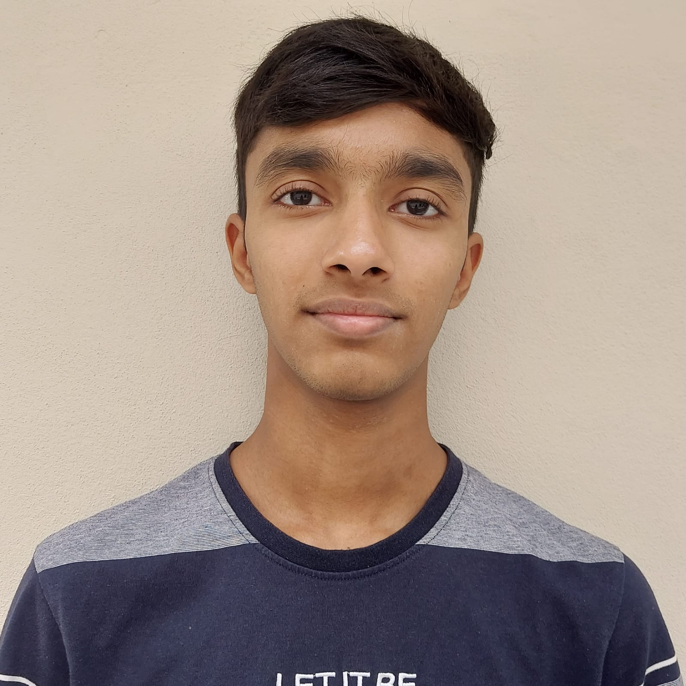
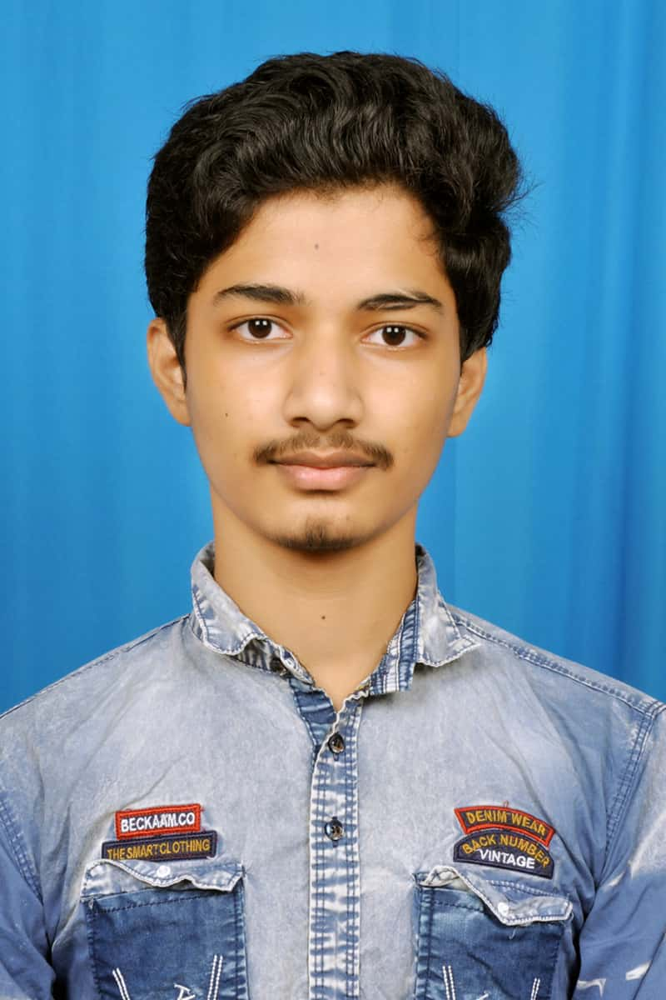

donate excess food for good.
Welcome to our team! We are two passionate and driven individuals dedicated to creating innovative solutions and tackling challenges with a fresh perspective.
Team:
Monish is a skilled full-stack developer with a solid portfolio of projects that highlight his dedication and creativity. Fluent in Telugu and Hindi, he excels at bringing ideas to life through well-crafted software solutions. Monish’s experience and passion for development make him an invaluable member of our team.
As a BTech student specializing in Computer Science Engineering with a focus on Artificial Intelligence and Machine Learning, Rohith brings technical expertise and a love for coding to our team. With a background in full-stack development, he has experience building comprehensive software applications, including projects like Farm Connect. Rohith’s knowledge spans several languages, including Telugu, Hindi, English, and Kannada, making him a versatile communicator. He’s enthusiastic about solving complex problems and values streamlined solutions that get the job done efficiently.
Together, we aim to build solutions that make a real impact. We believe that our combined skills in engineering, development, and problem-solving set us apart, and we look forward to bringing our best to every project we tackle.